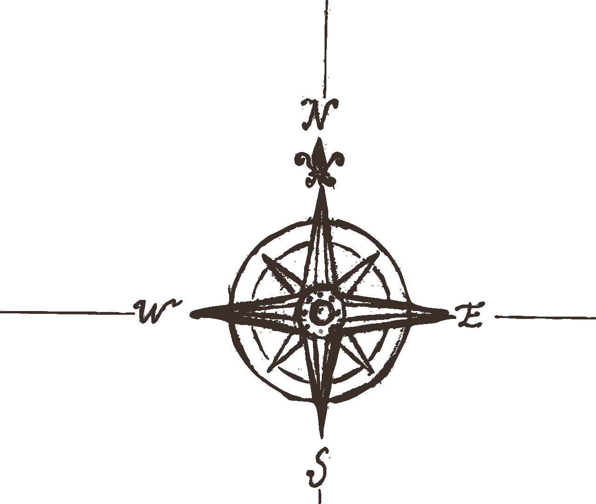

White Water Rafting Company

Who We Are
We’ve set the bar high. White Water Rafting Company has established itself
as a leader in the California and Oregon whitewater rafting and adventure
outfitter industry. From our guides and staff to our high level of service,
state-of-the-art-equipment, and perfect location, it is our mission to provide
you with an unforgettable experience that will keep you returning for years to
come.
We want to fit the trip to you, not fit you to the trip. With the most offerings
of any rafting company in the Northern California River system, we are able to
provide the perfect trip for you and your group.
History
Rafting is not something that we stumbled into, nor is it something we tried in college.
It is not something that we only do on a warm summer day. Rafting is our passion. We go
rafting because it is fun. We go rafting because it gets us outside. We go rafting because
we feel, it brings out the best in people.

After almost 40 years of operating on the Wild and Scenic Klamath River as Redwood Wilderness
Adventures, the White Water Rafting Company merged the two companies in 2016. This is an exciting
merger of two of the top Northern California River outfitters. We are now known as White Water
Rafting Company. We look forward to sharing the amazing Klamath and Smith Rivers with you year after year.